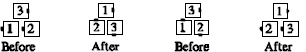

From a triangle: Triangle Circulate, then the dancers in the base of the triangle turn a quarter in place to form another triangle of the same handedness. Starting from a wave-based triangle, this finishes in a tandem-based triangle, and vice versa. This call cannot be fractionalized--it is done as a single smooth move.

© Copyright 1983, 1986-1988, 1995-2011 Bill Davis, John Sybalsky and CALLERLAB Inc., The International Association of Square Dance Callers. Permission to reprint, republish, and create derivative works without royalty is hereby granted, provided this notice appears. Publication on the Internet of derivative works without royalty is hereby granted provided this notice appears. Permission to quote parts or all of this document without royalty is hereby granted, provided this notice is included. Information contained herein shall not be changed nor revised in any derivation or publication.